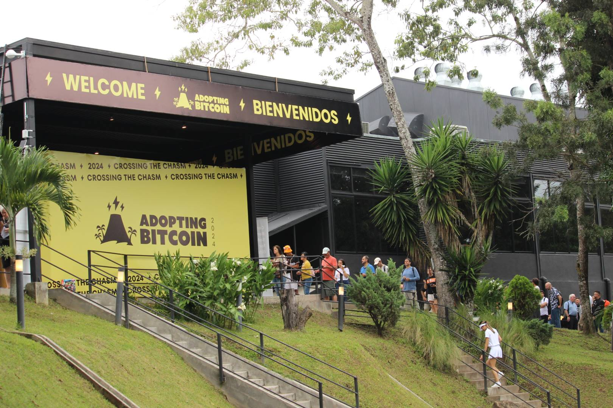

EN
en
es
Home
Speakers
Venue
Satellite events
faq
FAQ
FAQ
FAQ
FAQ
FAQ
FAQ
FAQ
FAQ
Arriving to San Salvador
Visa
If you are an international attendee, please check the official Salvadoran immigration website to determine if you need a visa to attend the conference. Currently, there are three types of visas available: visa exemption, visa on arrival, and consular visa. If you require a consular visa, we can provide an official invitation letter from the Minister of Tourism to facilitate your visa application process. To obtain the letter, you will need to provide us with:- A confirmed itinerary from your country to El Salvador, which must not exceed 30 days.- A scanned copy of your passport.- Your Adopting Bitcoin ticket code.Please note that we can only provide an invitation letter and visa support for El Salvador and not for any other country. Check for
visa requirements
for your own nationality.
Layover
If you have a layover somewhere on your way to El Savador, make sure to meet the requirements of the transit country/city/state.
Click here for more info.
Airport
The nearest airport to the convention center is the El Salvador International Airport in San Salvador (IATA code SAL)
Ground transportation
Taxi and Uber are commonplace and easy to use. A taxi ride from SAL airport to Sheraton costs around 35 USD. Keep in mind that cash is still the most common payment method in El Salvador, so make sure to have some dollars on arrival.
Safety
El Salvador is a beautiful and safe country, with the most welcoming people. If you are concerned about safety, here are some measure you can take to ease your mind while here:
- Don’t walk alone at night
- Don’t venture into unknown neighbourhoods
- Always keep cash at hand in case you need it
- Don’t “bring” your coins to the summit, and don’t carry valuable items with you
Emergency Best Practice
Know your consulate information phone number and address. Here are other useful numbers:
- Local Police: Dial 911
- Fire Fighter Department: Dial dial 913 or 2527-7300
- Salvadoran Red Cross: For emergencies dial 2222-5155
- Salvadoran Green Cross (Cruz Verde Salvadoreña): Dial 2284-5792
- Tourist police: Dial (503) 2511-8302 or (503) 2511-8300
Booking
Conference Venue
Salamanca Eventos

Discount
Yes! Check the main page section "Accommodation" for best price deals with selected hotels in San Salvador.
Hotels and Lodging
Generally we recommend that visitors stay in San Salvador for the first two days of the conference. This year's conference venue is Salamanca, 10 minutes drive south of San Salvador. There are many hotels and lodging opportunities in the South of San Salvador, including good offers on Airbnb and AirBTC. We have deals with some big hotels that you can find on the main page under accommodation.
On the third day, there will be a trip to Bitcoin Beach with shuttles, and some attendees prefer to book lodging there or in the nearby town of El Tunco. Others take the shuttle back in the evening to San Salvador (30 mins drive). Most satellite events and evening programs will be taking place in San Salvador.
Paying in Bitcoin
Many restaurants and bars are starting to offer bitcoin lightning payment options. However, we recommend that you keep a credit card or cash at hand at all times if you need other options.
You will be able to pay fully with Bitcoin (via LN) at the conference.
Check out
btcmap.org
for active locations to spend your sats.
Reimbursement
Tickets purchased for the conference cannot be refunded. If you are a ticket holder and cannot make it this year, reach out to info@adoptingbitcoin.org and we can issue a gift card for the value of the ticket price you paid.
Tickets
Tickets for Salvadorans / Para Salvadoreños
All Salvadorans can purchase the Adopting Bitcoin ticket for $21 ticket. It is the way the organizing team would like to encourage more Salvadorans to attend the conference. Please note that we will be conducting an ID check at the registration of all those that purchased these tickets. Just like the regular conference ticket, the $21 ticket gives you the opportunity to participate in all the event’s activities and conferences without any restrictions.
Todos los salvadoreños pueden adquirir la entrada Adoptar Bitcoin por 21 dólares. Es la forma en que el equipo organizador quiere animar a más salvadoreños a asistir a la conferencia. Tenga en cuenta que realizaremos un control de identidad en el registro de todos aquellos que hayan adquirido estas entradas. Al igual que el boleto regular de la conferencia, el boleto de $21 le da la oportunidad de participar en todas las actividades y conferencias del evento sin ninguna restricción.
Press & Media
Accreditation
Please send us an email with your contact information and media sample of your work, and we will provide you a media pass upon validation with our internal team of advisors.
Filming & Photography
All attendees will be provided with colour coded badges signalling consent or dissent to being filmed or photographed. We ask all attendees and press to respect attendees wishes. Any breaking of this rule will result in immediate expulsion from the event.
Interviews
All accredited press will be added to a list shared with speakers. Speakers can choose to reach out to you directly in order to set up an interview shall they wish to do so. A media room for interviews will be provided.
Adopting Bitcoin Brand
Feel free to use our logo and colors in your marketing materials. Please communicate these material with the organizing team.
BRAND KIT
Supporting the Event
Sponsor
If you’d like to talk about sponsoring the event, please reach out to
info@adoptingbitcoin.org
, ping Kemal directly on Telegram or leave your contact information in
this form
Volunteer
Let us know on telegram if you’d like to volunteer some of your time during the conference, or drop us an
email
Satellite Event
Write to us
if you’re organizing a satellite event and let us know, so it doesn’t conflict with any other, and we’ll make sure to communicate about it.
Network
Feel free to use the
telegram
group to communicate with participants before and during the conference, or ask us questions.
Bitcoin Twitter
Tweet about it the event! Use the hashtag #AB25 for better discoverability
Activities in El Salvador
General
El Salvador is a country full of hidden gems, and there are so many amazing activities to do here. Whether you´re a nature lover, a history buff, or just looking for some fun in the sun, there´s something for everyone. Find below some of the highlights we recommend.
Bitcoin City - Berlín
Inspired by the Bitcoin Beach in El Zonte and Punta Mango a small group of locals started a bitcoin circular economy in a small town of Berlín (founded by germans) situated on a volcano in departament of Usulután, in east of El Salvador. In under 2 years, they can boast about more than 120 bitcoin-accepting business and 15-20 expats who found their home base in this small town of 20k people. Make sure to
follow them on X
Santa Ana Volcano
Also known as Volcán Ilamatepec is the highest volcano in El Salvador and offers a challenging yet rewarding hike. You´ll get breathtaking views of the surrounding landscape from the summit.
Lake Coatepeque
This beautiful volcanic lake is perfect for kayaking, or just lounging on the beach. There are also plenty of restaurants and bars around the lake if you want to grab a bite or a drink.
El Boquerón National Park
This park is home to the famous El Boquerón volcano and offers some great hiking trails. You´ll get stunning views of the crater and the surrounding countryside.
National Theatre of El Salvador
This beautiful theater is a cultural landmark in San Salvador and hosts many concerts, plays, and other events throughout the year.
Joya de Cerén or
San Andres Archeological site
These two UNESCO World Heritage sites are a must-see for anyone interested in history. Joya de Cerén is a preserved ancient village that was buried by volcanic ash, while San Andres is an ancient Mayan site with impressive pyramids.
San Miguel and Barra de Santiago
El Salvador is known for its beautiful beaches, and these two are some of the best. San Miguel is great for surfing, while Barra de Santiago is a peaceful and secluded beach that´s perfect for relaxing.
Party in El Tunco
This small beach town is a popular destination for surfers and party-goers alike. There are plenty of bars and restaurants, and the nightlife here is lively.
Mercado del Mar in La Libertad
This bustling seafood market is the perfect place to try some of the freshest and most delicious seafood in El Salvador. You can also buy fish and other seafood to cook at home.
Ruta de Las Flores
Spend the day visiting various indigenous villages along the Ruta de Las Flores, a journey over Apaneca mountain range: This scenic drive takes you through some of the most picturesque towns in El Salvador. You´ll see colorful murals, artisanal crafts, and taste some of the best coffee and food in the country.
Tamanique Waterfalls
These stunning waterfalls are hidden away in the mountains and are the perfect place to escape the heat and humidity. You can swim in the pools below the falls or just relax and take in the natural beauty.
socials
socials
socials
socials
socials